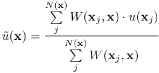
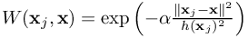
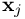
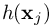

Simulate with complex geometries and complex physics
projY()
projection of a MESHFREE-entity by smooth, Shepard-type approximation
The projection of a MESHFREE-entity is done by a smooth, least-squares approximation of Shepard-type. Depending on the
given parameters, the projection is done from a different chamber, only for specific types of points,
or with a specific kernel. The MESHFREE-used least squares approximation naturaly fall back to the Shepard
apprximation if order 1 is chosen. The explicit formulation is
The values of an entity from a different chamber with chamber index iChamber can be projected by:
WhatPointsShouldBeUsed :
 (see above)
General Remark : given a projection task in iChamber at the location , then MESHFREE will search for
the closest neighbor point at location in iChamber. The neighbors for the projection task around
will be executed using the neighbor list of . Thus, the choice of the parameter NEIGHBOR_FilterMethod
will have a big impact on the results of the projection. We remember that, using NEIGHBOR_FilterMethod > 1, we prevent the
neighbor search from "looking through" thin walls.
(see above)
General Remark : given a projection task in iChamber at the location , then MESHFREE will search for
the closest neighbor point at location in iChamber. The neighbors for the projection task around
will be executed using the neighbor list of . Thus, the choice of the parameter NEIGHBOR_FilterMethod
will have a big impact on the results of the projection. We remember that, using NEIGHBOR_FilterMethod > 1, we prevent the
neighbor search from "looking through" thin walls.

with  where  are the neighbors and  the smoothing length
The basic projection of the MESHFREE-entity %ind_Entity% (see Indices) is invoked as:
[ ... projY(%ind_Entity%) ... ]
[ ... projY(iChamber, %ind_Entity%, OPTIONAL:WhatPointsShouldBeUsed , alphaKernel ) ... ]
- %EQN_Proj_INT% (force the projection using only interior points)
- %EQN_Proj_BND% (force the projection using only boundary points)
- %EQN_Proj_ALL% (force the projection using all types of points, i.e. interior and boundary points)
(see above)
General Remark : given a projection task in iChamber at the location , then MESHFREE will search for
the closest neighbor point at location in iChamber. The neighbors for the projection task around
will be executed using the neighbor list of . Thus, the choice of the parameter NEIGHBOR_FilterMethod
will have a big impact on the results of the projection. We remember that, using NEIGHBOR_FilterMethod > 1, we prevent the
neighbor search from "looking through" thin walls.